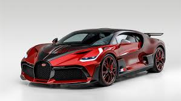

Automobiles Ettore Bugatti was a German then French manufacturer of high-performance automobiles. The company was founded in 1909 in the then-German city of Molsheim, Alsace, by the Italian-born industrial designer Ettore Bugatti. The cars were known for their design beauty and numerous race victories. Famous Bugatti automobiles include the Type 35 Grand Prix cars, the Type 41 "Royale", the Type 57 "Atlantic" and the Type 55 sports car. The death of Ettore Bugatti in 1947 proved to be a severe blow to the marque, and the death of his son Jean in 1939 meant that there was no successor to lead the factory with no more than about 8,000 cars made. The company struggled financially, and it released one last model in the 1950s before eventually being purchased for its airplane parts business in 1963. In 1987, an Italian entrepreneur bought the brand name and revived it as Bugatti Automobili S.p.A.[2] A movie about the founding of the French car manufacturer Bugatti is being produced by Andrea Iervolino with the film slated for release in 2025.[3]
